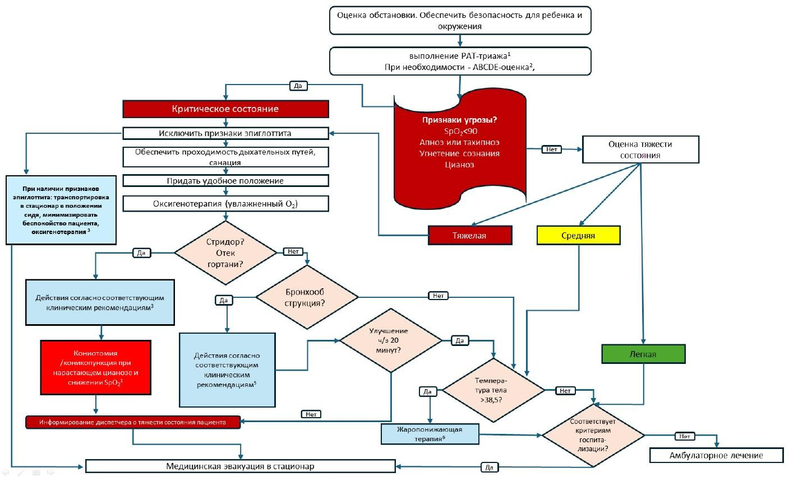

Сверка с PDF рубрикатора выполняется…
ОРВИ у детей
Клинические рекомендации от 02.09.2026 · дети
Основные положения
- ОРВИ является самой частой острой инфекцией дыхательных путей и в большинстве случаев проходит самостоятельно. Клиническая картина практически не зависит от возбудителя, лечение направлено на облегчение симптомов. Изменение цвета слизи из носа на жёлто-зелёный не является признаком бактериальной инфекции.
- Детям с ринитом и лихорадкой показана отоскопия. Рентгенография пазух в первые 10–14 дней при отсутствии признаков бактериального синусита не рекомендуется. Бактериальный синусит следует заподозрить при заложенности более 7 дней и второй волне температуры; отит развивается, как правило, на 2–5-е сутки.
- Лечение симптоматическое:
- промывание носа солевыми растворами;
- сосудосуживающие препараты не более 5 дней;
- при лихорадке парацетамол или ибупрофен (оба с 3 месяцев).
Антибиотики при неосложнённой ОРВИ не назначают, в том числе при риносинусите, ларингите, крупе, бронхите в первые 10–14 дней.
- Госпитализации подлежат дети до 3 месяцев с фебрильной лихорадкой и дети любого возраста с опасными признаками:
- отказ от питья, вялость;
- дыхательная недостаточность, цианоз;
- тяжёлое обезвоживание;
- фебрильная лихорадка более 4–5 суток, рефрактерная к жаропонижающей терапии;
- геморрагический синдром.
Клиническая картина и классификация
Определение
ОРВИ — самая частая острая инфекция дыхательных путей; в большинстве случаев проходит сама и специфического лечения не требует.
Проявления катарального воспаления- лихорадка;
- ринит, чихание;
- кашель;
- боль в горле, осиплость;
- нарушение общего состояния.
- острый ринофарингит;
- острый фарингит;
- острый трахеит;
- острая инфекция верхних дыхательных путей неуточнённая.
ОРИ без установленной этиологии (вирусная и (или) бактериальная) раньше называли ОРЗ.
Этиология
Возбудителями ОРВИ являются преимущественно вирусы. Одновременно циркулируют десятки возбудителей, но клиническая картина от этиологии почти не зависит, поэтому диагноз должен отражать нозологическую форму.
Передача происходит чаще самоинокуляцией на слизистую носа или конъюнктиву с загрязнённых рук и поверхностей, а также воздушно-капельно. Инкубация 2–7 дней; пик выделения вируса на 3-и сутки, слабое выделение до 2 недель.
Симптомы являются реакцией иммунной системы; цвет назального секрета меняется на бело-жёлтый или зеленоватый из-за лейкоцитов, поэтому считать его признаком бактериальной инфекции безосновательно. «Вирусно-бактериальная» ОРИ практикой не подтверждается: бактериальные осложнения редки.
Основные возбудители раздел 1.2 КР
| Возбудитель | Особенности |
|---|---|
| Риновирус | 25–40% ОРВИ, круглый год с подъёмами весной и осенью, чаще дети до 5 лет; ринит, бронхит, провоцирует бронхообструкцию и обострения астмы; выделение вируса 5–10 дней |
| Аденовирус | поражает дыхательные пути, лимфоидную ткань, конъюнктиву, кишечник; устойчив во внешней среде до 2 недель; до 6 месяцев защищают материнские антитела; вспышки в коллективах |
| Респираторно-синцитиальный вирус | высококонтагиозен, иммунитет нестойкий; у детей до 2 лет — бронхиолит с дыхательной недостаточностью; есть пассивная иммунизация для групп риска |
| Метапневмовирус | от лёгких форм до бронхита, бронхиолита, пневмонии; пик зимой и ранней весной |
| Грипп | антигенная изменчивость; ринит, фарингит, ларингит, трахеит, бронхит; тяжёлое течение с пневмонией и ОРДС; есть вакцинация |
| Парагрипп | у маленьких детей может давать «ложный круп» (острый обструктивный ларингит); иммунитет нестойкий |
| Сезонные коронавирусы | до 30% сезонных ОРВИ у детей; инкубация 2–3 дня; ринит, фарингит, сухой кашель, диарея |
| Бокавирус | ринофарингит, иногда обструктивный бронхит, может ухудшать астму |
Степени тяжести
Температура не отражает тяжесть: опасные состояния бывают и без лихорадки. Главной задачей является стратификация риска, особенно у детей с тяжёлой сопутствующей патологией.
Степени тяжести- лёгкая: слабая интоксикация, неяркие местные изменения;
- среднетяжёлая: умеренная интоксикация (головная боль, слабость, снижение аппетита), возможен абдоминальный синдром;
- тяжёлая: выраженное нарушение общего состояния, многократная рвота, изменения сердечно-сосудистой системы, метаболические нарушения, возможны бред, судороги.
Признаки особой тяжести: судорожный, менингеальный, геморрагический синдромы, признаки энцефалита, гипотермия.
Клиническая картина
Начало острое, чаще субфебрилитет (37,5–38,0 °C).
Фебрильная лихорадка характернее для- гриппа;
- аденовирусной инфекции;
- энтеровирусных инфекций.
У 82% температура снижается на 2–3-й день, при гриппе и аденовирусной инфекции держится до 5–7 дней.
Признаки бактериальной инфекции и осложнений- нарастание температуры и признаки бактериальной интоксикации указывают на бактериальную инфекцию;
- повторный подъём после улучшения часто связан с острым средним отитом на фоне ринита.
При лихорадке может быть трудно вовремя распознать бактериальную инфекцию; чаще она встречается у детей младше 1 года.
- ринофарингит: заложенность, выделения, жжение и сухость в носоглотке, стекание слизи с кашлем и чиханием; пик на 1–3-й день, длительность до 6–8 дней; при евстахеите щелчки, шум, боль в ушах, снижение слуха; у грудных — беспокойство, трудности кормления и засыпания;
- ларингит: осиплость, грубый сухой кашель; в отличие от крупа нет стеноза и дыхательной недостаточности;
- фарингит: гиперемия, отёчность и зернистость задней стенки глотки, непродуктивный навязчивый кашель;
- трахеит: навязчивый изнуряющий кашель, затем влажный; до 10–14 дней.
Осложнения
- острый синусит, чаще бактериальный: заложенность носа более 7 дней, вторая волна температуры, тяжесть в голове, головная боль;
- острый средний отит: постоянные или пульсирующие (стреляющие) боли в ухе, возможна болезненность в области сосцевидного отростка. Катаральный отит особенно часто развивается при рините и РС-инфекции, как правило, на 2–5-е сутки назофарингита у детей раннего возраста (до 20–40%), но гнойный отит, требующий антибиотиков, возникает далеко не у всех (тактика — по КР «Острый средний отит»);
- острый бронхит: длительный продуктивный кашель;
- пневмония: температура 38,0 °C и выше более 3 дней; при гриппе до 12% детей;
- бактериемия: около 1% при РСВ, 6,5% при энтеровирусах;
- обострение хронических болезней: астмы, инфекции мочевых путей.
Исходы и прогноз
Без осложнений ОРВИ скоротечна, выделения из носа и кашель могут держаться 1–2 недели. Мнение, что частые ОРВИ — признак «вторичного иммунодефицита» или переходят в хронические болезни, безосновательно.
Диагностика
Критерии диагноза
Общепринятых критериев нет. Диагноз устанавливается по жалобам, анамнезу, данным осмотра и эпидемиологического анамнеза; обследование нацелено прежде всего на выявление осложнений, выбор тактики и маршрутизацию.
Катаральное воспаление верхних дыхательных путей, возможны- лихорадка;
- чихание, кашель;
- боль в горле, осиплость;
- нарушение обоняния.
В диагнозе следует избегать изолированного термина «ОРВИ» и указывать нозологическую форму: «острый назофарингит», «острый ларингофарингит», «острый фарингит».
Жалобы и анамнез
- контакт с больными, заболеваемость в детском учреждении, эпидемический подъём, сезон;
- характер и длительность жалоб: недомогание, лихорадка, у грудных — отказ от груди, беспокойство; боль в горле, насморк, осиплость, кашель, лимфоузлы, боли в животе;
- при осложнениях: одышка, сердцебиение, сильная головная боль, рвота, судороги, потеря сознания;
- переносимость температуры, фебрильные судороги в анамнезе, динамику симптомов;
- хронические заболевания — риск осложнений;
- прививки (у детей до 6 месяцев — и вакцинацию матери), пассивную иммунизацию против РСВ у детей из групп риска.
Осмотр, аускультация и пальпация
- кожу и слизистые оболочки, склеры;
- нёбные дужки и заднюю стенку глотки (гиперемия, зернистость, фолликулы);
- миндалины;
- регионарные лимфоузлы.
Те же признаки встречаются при стрептококковом тонзиллофарингите.
- частота сердечных сокращений и аускультация сердца — для выявления миокардита, кардиомиопатии, эндокардита, нарушений ритма;
- пальпация и аускультация лёгких — для выявления бронхита, бронхообструкции, пневмонии;
- осмотр и пальпация живота — для выявления поражения ЖКТ, гепатоспленомегалии (инфекционный мононуклеоз).
Пальпация и аускультация грудной клетки определяют уровень поражения дыхательных путей: бронхит, бронхообструкция, локальная симптоматика пневмонии.
При осмотре и пальпации живота: при аденовирусной инфекции возможны тошнота, рвота, диарея; гепатомегалия со спленомегалией или без неё возможна при инфекционном мононуклеозе.
При головной боли, вялости, сонливости проверяют менингеальные симптомы: инфекции ЦНС (в том числе корь) могут начинаться с катаральных симптомов.
При лихорадке, рвоте, диарее оценивают степень обезвоживания по шкале CDS. На каждый 1 °C повышения температуры потери жидкости и электролитов растут примерно на 10%.
Шкала дегидратации CDS приложение Г1 к КР
| Признак | 0 баллов | 1 балл | 2 балла |
|---|---|---|---|
| Внешний вид | нормальный | жажда, беспокойство, раздражительность | вялость, сонливость, слабость |
| Глаза | нормальные | слегка запавшие | запавшие |
| Слизистые оболочки | влажные | липкие | сухие |
| Слёзы | слезоотделение в норме | слезоотделение снижено | слёзы отсутствуют |
- 0 баллов: дегидратации нет;
- 1–4 балла: лёгкая дегидратация;
- 5–8 баллов: дегидратация средней и тяжёлой степени.
Отоскопия
- дети с ОРВИ, ринитом и лихорадкой: отоскопия по возможности, чтобы своевременно выявить отит.
Экспресс-тесты и ПЦР
- подозрение на острый стрептококковый тонзиллит: экспресс-тест на БГСА в мазке из зева.
- высокая лихорадка и подозрение на грипп: ПЦР на РНК вирусов гриппа A и B в мазке из носоглотки или иммунохроматографический экспресс-тест для своевременного противовирусного лечения.
- грипп: начало острое, 12–48 часов;
- COVID-19: 2–14 дней, чаще 5–7 дней;
- РС-вирусная инфекция: 3–7 дней;
- ОРВИ неуточнённая: 1–13 дней, чаще 2–3 дня (аденовирусная инфекция до 13 дней).
ПЦР выявляет вирус в среднем до 7 дней, максимум до 2 недель от начала; результат через 4–6 часов.
Диагноз- в эпидемию диагноз «грипп» допустимо устанавливать клинически;
- без возможности этиологической диагностики — «гриппоподобное заболевание».
Селективно, чаще в стационаре: экспресс-тесты на аденовирус, РСВ, метапневмовирус, парагрипп, риновирусы, бокавирус, SARS-CoV-2 или ОТ-ПЦР в реальном времени на возбудителей ОРИ.
Для ПЦР берут мазок из носоглотки; определяют тех же возбудителей.
Выявление вируса не всегда означает его роль (носительство); рутинная верификация сомнительна, нужна у иммунокомпрометированных.
Общий анализ крови, С-реактивный белок, анализ мочи
- выраженные общие симптомы и лихорадка: развёрнутый общий анализ крови;
- в стационаре: всем пациентам.
Повышение маркеров воспаления является поводом искать «немую» пневмонию, отит, инфекцию мочевых путей. Лейкопения характерна для гриппа и энтеровирусов; при РСВ возможен лимфоцитарный лейкоцитоз выше 15×10⁹/л, при аденовирусе лейкоцитоз 15–20×10⁹/л и выше, СРБ выше 30 мг/л. Повторный анализ после выздоровления нецелесообразен.
- 0–7 дней: ЧДД более 50, ЧСС более 180 или менее 100, лейкоциты более 34×10⁹/л, САД менее 65 мм рт. ст.;
- 7 дней – 1 месяц: ЧДД более 40, ЧСС более 180 или менее 100, лейкоциты более 19,5 или менее 5×10⁹/л, САД менее 75;
- 1 месяц – 1 год: ЧДД более 34, ЧСС более 180 или менее 90, лейкоциты более 17,5 или менее 5×10⁹/л, САД менее 100;
- 2–5 лет: ЧДД более 22, ЧСС более 140, лейкоциты более 15,5 или менее 6×10⁹/л, САД менее 94;
- 6–12 лет: ЧДД более 18, ЧСС более 130, лейкоциты более 13,5 или менее 4,5×10⁹/л, САД менее 105;
- 13–18 лет: ЧДД более 16, ЧСС более 110, лейкоциты более 11 или менее 4,5×10⁹/л, САД менее 117.
Маркеры системной воспалительной реакции (табл. 8): нейтрофилез более 7,73–10×10⁹/л, С-реактивный белок более 30–37 мг/л, прокальцитонин более 0,5–0,95 нг/мл.
- лихорадка выше 38 °C, особенно без видимого очага: С-реактивный белок определяют селективно.
Уровень выше 50 мг/л характернее для бактериальной инфекции (точки отсечения в литературе 40–100 мг/л); его оценивают вместе с клинической картиной и в динамике.
В первые 12 часов лихорадки низкий СРБ бактериальную инфекцию не исключает. СРБ может быть низким также при заболеваниях печени и иммунодефиците. Прокальцитонин рутинно не показан.
- подозрение на инфекцию мочевых путей, в том числе у лихорадящих детей без катаральных явлений: общий анализ мочи (возможно тест-полосками).
У 5–10% детей раннего возраста с инфекцией мочевых путей есть и вирусная ко-инфекция с картиной ОРВИ. Детям с назофарингитом или ларингитом без лихорадки анализ мочи выполняют только при жалобах или патологии мочевой системы.
Рентгенография
Рентгенография пазух при остром рините или ринофарингите в первые 10–14 дней без признаков бактериального синусита не рекомендуется: ранняя рентгенография часто выявляет вирусное воспаление пазух, которое регрессирует самостоятельно за 2 недели.
Рентгенография и КТ лёгких каждому ребёнку с ОРВИ не рекомендуются из-за лучевой нагрузки. Усиление бронхососудистого рисунка и расширение корней недостаточны для диагноза пневмонии и не являются показанием к антибиотикам.
В сомнительных случаях, а также при подозрении на COVID-19 возможна спиральная КТ лёгких.
Пульсоксиметрия, ЭКГ, ЭЭГ
При признаках дыхательной недостаточности показана пульсоксиметрия.
- подозрении на нарушения ритма или миокардит;
- тяжёлой и осложнённой ОРВИ;
- пороках сердца, кардиомиопатии или миокардите в анамнезе.
При неврологической симптоматике (декомпенсация фоновой патологии, афебрильные судороги, подозрение на отёк мозга, менингит, энцефалит) ЭЭГ выполняют селективно.
Консультации специалистов
При подозрении на отит или синусит показан осмотр оториноларинголога.
- невролог: нейроинфекция;
- детский гематолог: выраженные изменения крови, геморрагический синдром;
- детский кардиолог: миокардит, сердечная недостаточность.
Лечение
Важно объяснить родителям доброкачественный характер болезни, ожидаемую длительность симптомов и достаточность минимальных вмешательств. Основу лечения составляет облегчение симптомов. Противовирусное лечение не входит в рутинное: оно разработано только для гриппа.
Ринит и боль в горле
- ринит: несколько раз в день 0,9% раствор натрия хлорида (с 2 лет) или стерильная морская вода.
У младенцев с обильным отделяемым слизь аспирируют отсосом, затем вводят солевой раствор; головной конец приподнимают. Гипертонические растворы могут вызывать неприятные ощущения и боль.
При заложенности носа применяют сосудосуживающие капли или спреи по инструкции, коротким курсом не более 5 дней. Системные препараты с деконгестантами крайне нежелательны.
Местные антисептики для горла (спреи, таблетки, пастилки) применяют селективно и с осторожностью: риск резистентности и нарушения микробиома; доказательств недостаточно.
Лихорадка
- здоровые дети 3 месяцев и старше: температура выше 38,5 °C в подмышечной впадине или выше 39–39,5 °C ректально;
- детям до 3 месяцев, при хронической патологии и при дискомфорте жаропонижающие назначают и при меньшей температуре.
- парацетамол: до 60 мг/кг в сутки, противопоказан до 3 месяцев;
- ибупрофен: до 30 мг/кг в сутки, противопоказан до 3 месяцев.
- первую дозу парацетамола дают внутрь;
- повторную дозу дают только при новом подъёме температуры, строго соблюдая интервал; курсом не давать;
- не чередовать и не сочетать жаропонижающие;
- ректально только при рвоте или непереносимости приёма внутрь;
- любая лихорадка у младенца до 3 месяцев требует тщательного обследования и направления к специалисту или в стационар.
Жаропонижающие вместе с антибиотиками могут маскировать неэффективность последних.
Физическое охлаждение применяют селективно и с осторожностью: ребёнка раскрывают, обтирают водой 25–30 °C; при «белой» лихорадке не применять.
- «литические смеси»: гипотермия, постуральная гипотензия;
- системные кортикостероиды: иммуносупрессия, жизнеугрожающие осложнения;
- ацетилсалициловую кислоту;
- нимесулид;
- метамизол натрия рутинно: риск агранулоцитоза; только в исключительных случаях однократно, если нет альтернативы.
Жаропонижающие и противосудорожные для профилактики фебрильных судорог не назначают; родителей учат распознавать судороги.
Системные кортикостероиды для снижения температуры не назначают: подавляют воспалительный ответ, иммуносупрессия, при многих инфекциях — жизнеугрожающие осложнения.
Ацетилсалициловую кислоту детям для снижения температуры не применяют — высокий риск нежелательных реакций.
Нимесулид детям для снижения температуры не применяют.
Метамизол натрия рутинно не используют — риск агранулоцитоза, ранние признаки которого на фоне лихорадки могут остаться незамеченными.
Профилактика фебрильных судорог жаропонижающими или противосудорожными не рекомендуется: побочные эффекты, нет доказательств.
- лихорадка: адекватная гидратация, прежде всего пероральными солевыми растворами для регидратации (не раствором декстрозы), при невозможности через зонд или внутривенно;
- лёгкое обезвоживание (возбудимость, жажда): пероральные солевые растворы;
- невозможность выпаивания, тяжёлое обезвоживание: парентеральная регидратация сбалансированными ионными растворами.
Маленьким детям дают по 0,5–1 чайной ложке, старшим небольшими глотками.
- натрий 50–60 ммоль/л;
- глюкоза менее 90 ммоль/л;
- общая осмолярность 200–245 ммоль/л.
- до 10 кг: 100 мл/кг;
- 10–20 кг: 1000 мл + 50 мл на каждый кг свыше 10;
- более 20 кг: 1500 мл + 20 мл на каждый кг свыше 20;
- более 40 кг: 1500 мл/м² поверхности тела.
При тяжёлой гиповолемии вводят болюс сбалансированного кристаллоида 20 мл/кг за 30–60 минут, при необходимости до 3 раз, оценивая эффект после каждого болюса.
- объём жидкости ограничивают до 50% физиологической потребности;
- при сохранной функции ЖКТ большую часть жидкости вводят энтерально;
- стремятся к «нулевому гидробалансу»;
- у гемодинамически стабильных пациентов рестрикцию титруют начиная с 50% расчётной потребности;
- при задержке жидкости оправданы петлевые диуретики.
Гипергидратация жизнеугрожающа.
- время наполнения капилляров 2 с;
- удовлетворительное наполнение пульса на периферических и магистральных артериях;
- тёплые конечности;
- почасовой диурез более 1 мл/кг/ч;
- артериальное давление в пределах возрастной нормы;
- нормальные концентрации глюкозы и ионизированного кальция в крови.
Кашель
- противокашлевые рутинно не назначают; при сухом навязчивом кашле в исключительных случаях допустимы бутамират, леводропропизин или преноксдиазин;
- трахеит с трудноотделяемой мокротой: муколитики коротко и с осторожностью, особенно до 2 лет и при нервно-мышечных болезнях («заболачивание»);
- муколитики и отхаркивающие не сочетают с противокашлевыми;
- паровые ингаляции не применяют: риск ожогов, нет пользы;
- системные антигистаминные не назначают: они неэффективны;
- аскорбиновую кислоту не назначают.
Муколитики (амброксол, ацетилцистеин, карбоцистеин) и отхаркивающие — селективно при трахеите с трудноотделяемой мокротой.
Отхаркивающие одновременно с противокашлевыми не назначают: подавление кашля ведёт к застою мокроты.
Паровые ингаляции детям не рекомендуются: опасность ожогов, нет доказательств пользы; ВОЗ их не рекомендует.
Системные антигистаминные при ОРВИ не назначают: не уменьшают ринит и кашель.
Аскорбиновую кислоту всем детям с ОРВИ не назначают: явного улучшения нет.
Кашель при ларинготрахеите и фарингите не требует бронходилататоров, муколитиков и ингаляционных глюкокортикоидов (информация для родителей).
Противовирусные препараты
- подозрение на грипп у пациентов групп риска или подтверждённый грипп A и B: в первые 24–48 часов ингибитор нейраминидазы (осельтамивир или занамивир с 5 лет) по инструкции.
На вирусы без нейраминидазы не действуют. При лёгком и среднетяжёлом гриппе без факторов риска и для постконтактной профилактики не применяют. Возможны тошнота, рвота, у занамивира — бронхоспазм.
При гриппе средней тяжести, в том числе у пациентов групп риска, применяют балоксавир марбоксил, детям массой от 20 кг по инструкции.
Пациентам старше 2 лет с гриппом или ОРВИ неустановленной этиологии селективно назначают умифеновир в первые 24–48 часов.
Распространённые в России противовирусные и иммуномодулирующие препараты не имеют достаточных доказательств: эффект ограничивается сокращением болезни в пределах одного дня. Рутинно их не используют, полипрагмазии избегают.
- азоксимера бромид;
- альфа-глутамил-триптофан + аскорбиновая кислота + бендазол;
- имидазолилэтанамид пентандиовой кислоты;
- инозин пранобекс;
- интерферон альфа-2b (топические формы);
- кагоцел;
- меглюмина акридонацетат;
- меглюмина натрия сукцинат;
- риамиловир;
- тилорон;
- энисамия йодид;
- аффинно очищенные антитела в микродозах (анаферон, рафамин, эргоферон);
- эуфорбиум композитум.
Антибактериальная терапия
При неосложнённой вирусной инфекции системные антибиотики не назначают: они не предотвращают бактериальную суперинфекцию, а способствуют её развитию.
Антибиотики не назначают- неосложнённая ОРВИ и грипп;
- в первые 10–14 дней: риносинусит, конъюнктивит, ларингит, круп, бронхит, бронхообструктивный синдром.
Могут быть показаны детям с хронической бронхолёгочной патологией (например, муковисцидозом) и иммунодефицитом — по микробиологии мокроты.
Иное лечение
При остром трахеите с трудноотделяемой мокротой селективно применяют препараты листьев плюща (капли с 2 лет, сироп с грудного возраста), первоцвет + тимьян (таблетки с 12 лет), плющ + тимьян (сироп с 2 лет) или другие растительные средства без противопоказаний.
Ребёнок ест по аппетиту, заставлять не следует; польза обильного питья сомнительна. При лихорадке выше 38 °C дают пероральные солевые растворы, а не раствор декстрозы. Мёд, лимон, травяные чаи являются безопасной альтернативой для облегчения симптомов при отсутствии аллергии.
Гомеопатические средства для лечения ОРВИ у детей не рекомендуются — нет доказательств.
Алгоритм-схема ведения пациента с острой респираторной вирусной инфекцией (ОРВИ)
- 1
Пациент с симптомами ОРВИ
Ребёнок с признаками катарального воспаления верхних дыхательных путей: лихорадка, ринит, чихание, кашель, боль в горле, осиплость, нарушение общего состояния. Клиническая картина практически не зависит от возбудителя; в большинстве случаев ОРВИ проходит самостоятельно.
- 2
Диагностика
Диагноз устанавливается по жалобам, анамнезу, данным осмотра и эпидемиологического анамнеза; общепринятых критериев нет. Обследование нацелено на выявление осложнений, выбор тактики и маршрутизацию.
Осматривают кожу, слизистые оболочки, нёбные дужки, заднюю стенку глотки, миндалины и регионарные лимфатические узлы, проводят аускультацию сердца и лёгких, пальпацию живота. Детям с ринитом и лихорадкой по возможности выполняют отоскопию для своевременного выявления отита. Рентгенография пазух в первые 10–14 дней без признаков бактериального синусита не рекомендуется.
- 3
Диагноз подтверждён?
В диагнозе следует указывать нозологическую форму (острый назофарингит, острый ларингофарингит, острый фарингит), избегая изолированного термина «ОРВИ». Необходимо исключить стрептококковый тонзиллофарингит, грипп, инфекции ЦНС и мочевых путей, пневмонию.
Подтверждён ли диагноз ОРВИ?
- 4
Консультация специалиста
конец алгоритмаДиагноз ОРВИ не подтверждён либо заподозрено осложнение. При подозрении на отит или синусит показан осмотр оториноларинголога; по показаниям привлекают невролога, детского гематолога, детского кардиолога.
- 5
Имеются показания к госпитализации?
Госпитализации подлежат дети до 3 месяцев с фебрильной лихорадкой и дети любого возраста с опасными признаками: отказ от питья, вялость, дыхательная недостаточность, цианоз, тяжёлое обезвоживание, фебрильная лихорадка более 4–5 суток, не снижающаяся жаропонижающими, геморрагический синдром. При ринофарингите, ларингите, трахеите без опасных признаков госпитализация нецелесообразна.
Есть ли показания к госпитализации?
- 6
Лечение в стационаре
Лечение проводится в стационаре, по возможности в боксированном или инфекционном отделении; в среднем пребывание составляет 3–7 дней. Лечение остаётся симптоматическим. При тяжёлом обезвоживании показана парентеральная регидратация сбалансированными ионными растворами, при дыхательной недостаточности — пульсоксиметрия.
- 7
Терапия эффективна?
Оценивают течение заболевания. Без осложнений ОРВИ скоротечна, выделения из носа и кашель могут сохраняться 1–2 недели. Бактериальный синусит следует заподозрить при заложенности носа более 7 дней и второй волне температуры, отит развивается, как правило, на 2–5-е сутки.
Эффективно ли лечение?
- 8
Профилактика повторной инфекции
конец алгоритмаСостояние улучшилось. Профилактика включает мытьё рук, использование масок, обработку поверхностей и проветривание. Ежегодная вакцинация против гриппа показана с 6 месяцев; после ОРВИ прививают, как правило, через неделю после выздоровления.
- 9
Коррекция терапии
Лечение неэффективно или присоединилось осложнение: острый синусит, острый средний отит, бронхит, пневмония. Диагноз и тактику пересматривают, при подозрении на отит или синусит показана консультация оториноларинголога.
- 10
Лечение в амбулаторных условиях
Лечение, как правило, амбулаторное у педиатра или инфекциониста и направлено на облегчение симптомов. Нос промывают солевыми растворами, сосудосуживающие препараты назначают не более 5 дней. При лихорадке применяют парацетамол или ибупрофен (оба разрешены с 3 месяцев). Антибиотики при неосложнённой ОРВИ не назначают.
Противовирусные препараты используют только при гриппе: в первые 24–48 часов назначают ингибитор нейраминидазы (осельтамивир или занамивир с 5 лет). Повторный осмотр показан, если температура держится более 3 дней или состояние ухудшается.
Алгоритм действий врача

Показания к госпитализации. Профилактика
Показания к госпитализации
- дети до 3 месяцев с фебрильной лихорадкой;
- дети с любым опасным признаком (см. ниже);
- дети со сложными фебрильными судорогами (более 15 минут и (или) повторно в течение суток) — на весь период лихорадки;
- лихорадящие дети с подозрением на тяжёлую бактериальную инфекцию: вялость, отказ от еды и питья, снижение мочеотделения, геморрагическая сыпь, рвота (возможна и гипотермия);
- дети с дыхательной недостаточностью;
- дети с коморбидной патологией и риском декомпенсации;
- дети по эпидемическим показаниям.
- неспособность или отказ пить, сосать грудь;
- сонливость, вялость, отсутствие контакта или резкое беспокойство;
- респираторный дистресс: одышка, тахипноэ, втяжение уступчивых мест, кряхтящее дыхание, апноэ;
- центральный цианоз;
- сердечная недостаточность;
- тяжёлое обезвоживание;
- фебрильная лихорадка более 4–5 суток, не снижающаяся жаропонижающими;
- геморрагический синдром: носовое кровотечение, прожилки крови при кашле, геморрагическая сыпь.
- кряхтящее дыхание, раздувание крыльев носа, кивательные движения;
- частота дыхания: до 2 месяцев более 60 в минуту, 2–11 месяцев более 50, старше 1 года более 40;
- втяжение нижней части грудной клетки;
- сатурация менее 95% на воздухе.
- иммунодефицит;
- онкологические и гематологические болезни, нарушения свёртывания;
- пороки сердца и аритмии, кардиомиопатия, лёгочная гипертензия;
- хронические болезни лёгких;
- болезни ЦНС;
- эндокринные болезни (сахарный диабет 1 типа);
- болезни печени, почек, ЖКТ.
Вопрос о госпитализации рассматривают также при осложнённом течении ОРВИ, безуспешности или невозможности амбулаторного лечения. При длительной фебрильной лихорадке, тяжёлых осложнениях и по эпидемическим показаниям лечение проводится в стационаре, по возможности в боксированном или инфекционном отделении.
- лечение, как правило, амбулаторное у педиатра или инфекциониста;
- повторный осмотр при температуре более 3 дней или ухудшении;
- при рините, ринофарингите, ларингите, трахеите без опасных признаков госпитализация нецелесообразна;
- после простых фебрильных судорог (до 15 минут, однократно за сутки) ребёнка осматривают для исключения нейроинфекции, решение о госпитализации индивидуально;
- в стационаре в среднем 3–7 дней.
Режим общий или при необходимости полупостельный с быстрым переходом на общий после снижения температуры.
- ребёнок длительно отказывается от питья;
- появились раздражительность, необычная сонливость со снижением реакции на контакт;
- затруднено, шумное или учащённое дыхание, втяжение межрёберных промежутков, яремной ямки;
- судороги или бред на фоне повышенной температуры;
- температура более 38,4–38,5 °C сохраняется более 3 дней;
- заложенность носа без улучшения более 10–14 дней, особенно со «второй волной» температуры или ухудшением состояния;
- боль в ухе или выделения из уха;
- кашель более 10–14 дней.
Профилактика
- мытьё рук;
- маски;
- обработка поверхностей и инструментов;
- изоляция заболевших детей;
- проветривание.
Руки мыть не менее 30 секунд, рот и нос закрыты маской, расстояние не менее 1,5 м.
Правила «3П»Избегать плохо проветриваемых помещений, мест скопления людей и близко говорящих людей.
Ежегодная вакцинация против гриппа показана с 6 месяцев; вакцинация от гриппа и пневмококка снижает риск острого среднего отита. После ОРВИ прививают, как правило, через неделю после выздоровления, при неблагоприятной эпидемиологической обстановке возможно раньше.
- дети до 6 месяцев, рождённые на 35-й неделе и раньше;
- дети до 2 лет, лечившиеся по поводу бронхолёгочной дисплазии в последние 6 месяцев;
- дети до 2 лет с гемодинамически значимыми пороками сердца.
- детям, рождённым до 28 недель 6 дней, в первые 12 месяцев жизни;
- после операций на сердце с искусственным кровообращением или ЭКМО: дополнительная доза;
- детям до 24 месяцев с врождёнными дефектами иммунитета;
- по решению консилиума: тяжёлая нервно-мышечная патология, травма ЦНС, аномалии дыхательных путей, муковисцидоз, первичная цилиарная дискинезия, синдром Дауна, состояние после трансплантации.
Для постконтактной профилактики селективно применяют умифеновир по инструкции; доказательства невысокие.
Причинами рецидивирующих респираторных инфекций (раньше «часто болеющие дети») являются свойства возбудителей, экология, пассивное курение, атопия, хронические болезни.
Профилактика рецидивирующих инфекций- селективно лизаты бактерий или пидотимод (с 3 лет);
- достаточное потребление витамина D;
- селективно пробиотики L. rhamnosus GG и (или) S. salivarius K12 не менее 10⁹ КОЕ в сутки 3–6 месяцев;
- рутинно не используют растительные средства, аскорбиновую кислоту, гомеопатию.
Витамин D и его аналоги назначают для коррекции дефицита и профилактики респираторных инфекций.
L. rhamnosus GG и S. salivarius снижают частоту и длительность респираторных инфекций, в том числе отитов.
Растительные средства, аскорбиновая кислота и гомеопатия для профилактики рецидивирующих ОРВИ рутинно не применяются.
Реабилитация, как правило, не требуется; острые инфекции являются противопоказанием к санаторному лечению. Детям, часто болеющим ОРВИ, селективно проводят реабилитацию и санаторно-курортное лечение; следует избегать курения в окружении, недосыпа и переохлаждения.
Коды МКБ-10
Источник и актуальность
Журнал сверки
Неточности и противоречия в тексте рекомендации
- Существенных неточностей и противоречий, влияющих на диагностику и лечение, не найдено.